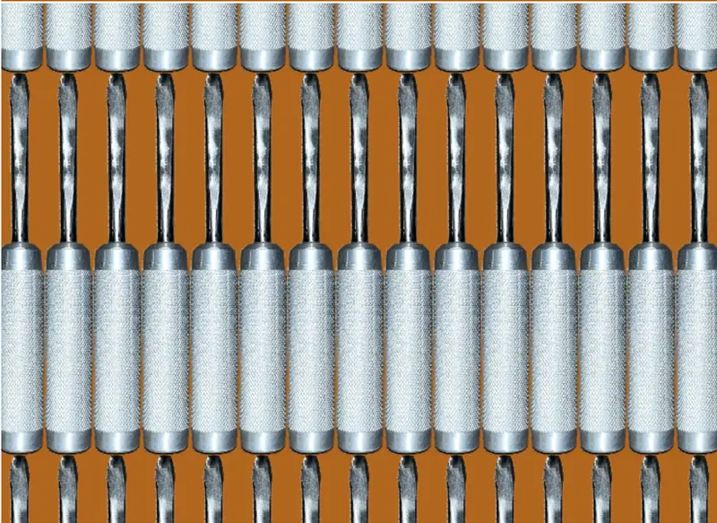

Forged Screwdriver
A multi-process screwdriver build combining CNC turning, knurling, forging, heat treatment, and grinding.

- Tracked labor
- 28 hours
- Original estimate
- $576.25
- Processes
- Turn / knurl / forge
- Completion
- Fall 2024
Build
This project moved beyond conventional cutting operations into forging and heat treatment. The screwdriver used a steel shaft and an aluminum handle blank, with machining and finishing steps distributed across the CNC lathe, knurling setup, forging operation, and grinding.
The original cost estimate used $8.45 of steel shaft stock, $7.80 for the aluminum blank, and 28 labor hours at $20 per hour, producing the class estimate of $576.25 for one screwdriver.
Machining lessons
Workholding mattered more than I expected. When turning the shaft, I found it better to clamp from the steel rod rather than the aluminum section, and the CNC lathe tailstock needed to be firmly seated against the center-drilled hole to avoid leaving an excessive uncut region.
Knurling also made the speed-feed relationship visible in the finished surface. Slower spindle speed produced a more defined pattern, while feed affected the spacing. The project made setup quality just as important as the nominal toolpath.
Process improvement
For a repeatable production process, I would separate the steel shaft and aluminum handle operations rather than asking one partially assembled part to survive every setup. A dedicated mandrel would improve support during knurling, and a keyed interface between the shaft and handle would make the final joint easier to control.
I also proposed a grinding fixture that holds the screwdriver at a fixed angle. That would replace hand-positioning and make tip geometry more consistent from part to part.
Original class portfolio: Screwdriver project ↗